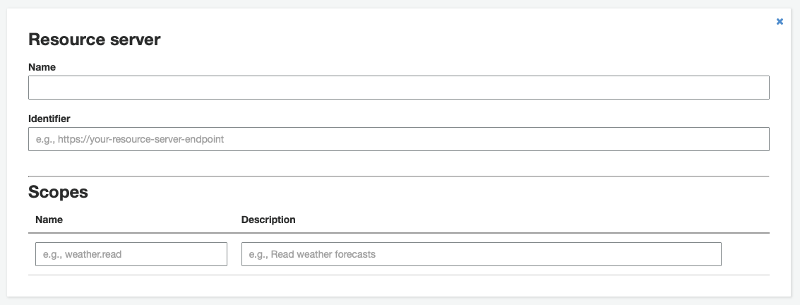
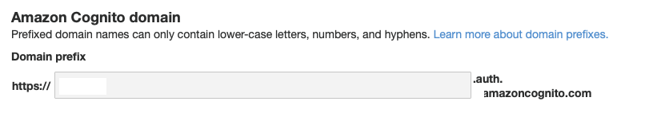

Cognito
Introduction
After having setup my lambda previously the next thing I thought would be worth while doing was setting up authentication for it.
I could be wrong but it seems like the sdk I want to use is aimed more at machine-to-machine communication rather than user-to-machine and is probably only meant to be used as a backend technology rather than client facing. Which will be fine for later but not for setting up client communication.
I found this article and will attempt to authenticate using the "OAuth 2.0 Authorization Code Grant".
Rather than building an actual application at this point I will use Paw HTTP Client to make any relevant api calls.
Steps to authorize a request
To use the Authorization Code flow with PKCE I need to do the following.
- Configure API Gateway
- Hit the /oauth2/authorize end point to retrieve a redirect to user login where a code can be retrieved
- Hit the /oauth2/token end point to retrieve identity, access and refresh tokens
- Use the access token in your request header to Authorize a request
User pool configuration
Resource services
Create a new resource and add a scope for use later
App client settings
Configure an App client
Enabled identity provider: Cognito User Pool
ID, Callback and Sign In URLs will be needed later.
Choose Authoization code grant flow.
Domain name
Choose a domain name this will be where authorization and token requests will be sent.
Request Authorization
PKCE
Before requesting authorization a code challenge and verifier must be created. This helps ensure the source is the same for both authorization and token requests.
Generate verifier
func generateVerifier() -> String {
var buffer = [UInt8](repeating: 0, count: 32)
_ = SecRandomCopyBytes(kSecRandomDefault, buffer.count, &buffer)
let verifier = Data(buffer).base64EncodedString()
.replacingOccurrences(of: "+", with: "-")
.replacingOccurrences(of: "/", with: "_")
.replacingOccurrences(of: "=", with: "")
.trimmingCharacters(in: .whitespaces)
return verifier
}
Generate challenge
func generateChallenge(verifier: String) -> String? {
guard let data = verifier.data(using: .utf8) else { return nil }
var buffer = [UInt8](repeating: 0, count: Int(CC_SHA256_DIGEST_LENGTH))
data.withUnsafeBytes {
_ = CC_SHA256($0, CC_LONG(data.count), &buffer)
}
let hash = Data(buffer)
let challenge = hash.base64EncodedString()
.replacingOccurrences(of: "+", with: "-")
.replacingOccurrences(of: "/", with: "_")
.replacingOccurrences(of: "=", with: "")
.trimmingCharacters(in: .whitespaces)
return challenge
}
/oauth2/authorize
Execute a GET request to the cognito sub domain with required parameters passed in the query string.
// **SUB_DOMAIN**: The sub domain created earlier
// **AWS_REGION**: The aws region used when creating a sub domain
// **CLIENT_ID**: The ID found in App client settings
// **CALL_BACK_URL**: The url specified in App client settings
// **SCOPES**: space seperated scopes. Custom scopes must be defined in resource server and set to allowed in App client settings. A scope name includes ResourceServerIdentifier/ScopeName
// **CODE_CHALLENGE**: PKCE code challenge, this is a hash of the verifier which is itself just random bytes. All base64 encoded.
GET https://<SUB_DOMAIN>.auth.<AWS_REGION>.amazoncognito.com/oauth2/authorize?response_type=code&client_id=<CLIENT_ID>&redirect_uri=<CALL_BACK_URL>&scope=phone%20openid%20<SCOPES>&code_challenge_method=S256&code_challenge=<CODE_CHALLENGE>
A successful response will redirect using the Location header
/oauth2/token
Execute a form post to the sub domain with required parameters passed in the body.
// **BASE64(CLIENT_ID:CLIENT_SECRET)**: Colon seperated client id and secret, base64 encoded found in App client settings.
// **AUTHORIZATION_CODE**: The code found on the redirect after user login.
// **CLIENT_ID**: The ID found in App client settings.
// **CALLBACK_URL**: The url specified in App client settings.
// **CODE_VERIFIER**: PKCE code verifier for the challenge sent previously. This is the original unhashed random bytes base64 encoded.
POST /oauth2/token HTTP/1.1
Authorization: Basic <BASE64(CLIENT_ID:CLIENT_SECRET)>
Content-Type: application/x-www-form-urlencoded
grant_type=authorization_code&code=<AUTHORIZATION_CODE>&client_id=<CLIENT_ID>&redirect_uri=<CALLBACK_URL>&code_verifier=<CODE_VERIFIER>
Require authorization to access our lambda
Authorize request using id token (not recommended)
- Choose the Cognito user pool as your Authorization method
- Do not specify any scopes
- Use
id tokenasAuthorizationheader - Do not include
Bearerin token string.
Scopes
The following seemed unstable it would work sometimes and then the steps would not work later, I am yet to understand why this is the case. (it is not due to token expiry as I did the entire authorisation process again)
- Choose the Cognito user pool as your Authorization method
- Specify scopes
- Use
access tokenasAuthorizationheader - Do not include
Bearerin token string.
Other options
The implicit flow is an option in AWS to retrieve an access token however it is not recommended as it is considered that there are a greater number of vulnerabilities in that flow. There is a video here that discusses the topic.